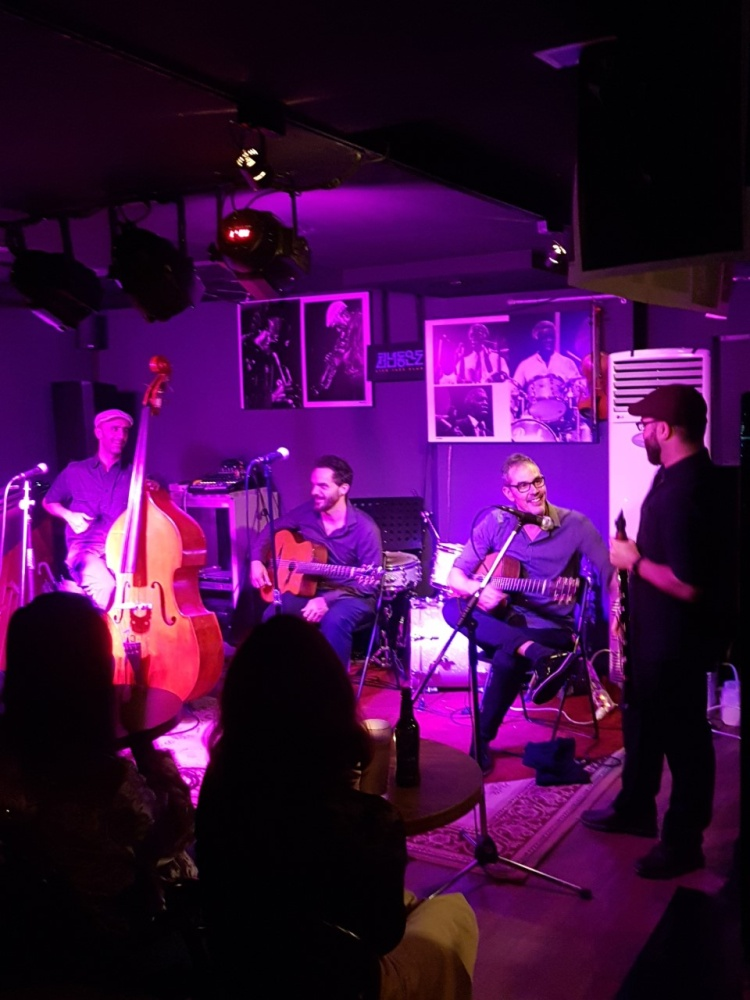

재즈바바가 들려주는 재즈 이야기
재즈가 익숙하지 않아도 걱정하지 마세요! 재즈바바가 알려드릴게요 :)
이전 페이지
이전글
이전글 제목이 들어가는 공간
목록보기
다음글 제목이 들어가는 공간. 근데 제목이 엄청 길어지면 그때는 어떻게 되냐 그건 말줄임표 처리를 해줘야 레이아웃이 깨지지 않을것이다
다음글
게시물 제목 들어오는 영역
2021.09.43

비밥의 등장은 1940년대 중반 스윙재즈의 매너리즘에서 벗어나고자 한 갈망을 시작으로 재즈의 이념이 ‘창의와 자유’로 굳어진 획기적인 역사적 사건이다. 악보를 보고 반복하는 스윙 빅밴드가 아닌 새로운 음악(형식)에 대한 열망이 가득한 연주자들이 주축이 된 재즈로 소규모 편성을 중심으로 연주자의 빠르고 현란한 독주와 긴장이 넘치는 연주가 비밥(Be Bob)이다. 비밥으로 인해 재즈는 대중들의 음악에서 연주자와 매니아들을 위한 예술적 음악으로 변화를 갖게 된다.
비밥(Be Bob)의 시작
비밥의 등장에는 여러 요인이 있는데, 미국의 세계대전 참전으로 규모가 큰 빅밴드 운영이 점점 어려워지면서 소규모 편성이 주목을 받게 되고, 이는 소규모 녹음을 주로 하는 독립 재즈음반사의 부흥으로 연결된다. 당연히 독립 음반사는 빅밴드보다 소규모 편성의 실험적인 비밥을 우선시 하게 되는데 이때 찰리 파커(Charlie Parker), 델로니어스 몽크(Thelonious Monk) 등이 각광을 받게 된다. 비밥은 1943년 뉴욕 할렘 118번가 민턴즈 플레이하우스에서 찰리 파커를 중심으로 한 애프터 아워즈 잼 세션(After Hours Jam Sessions)이 그 시작이다. 더 이상 재즈가 춤을 위한 반주 음악이 아닌 연주자 자신의 음악성을 표현하고 그 창조성을 극대화 시키는 음악이 된 것이다. 연주되는 곡들 또한 기존에 사랑 받던 유명 스탠더드에서 연주자들이 직접 만든 오리지널 곡 위주로 바뀌게 되는데 이렇게 아티스트 중심으로 흐르다 보니 편안하고 익숙한 음악에서 난해하고 감상 중심 음악으로 이동해 대중들과 멀어지게 된다.
비밥은 1943년 뉴욕 할렘 118번가 민턴즈 플레이하우스에서 찰리 파커를 중심으로 한 애프터 아워즈 잼 세션(After Hours Jam Sessions)이 그 시작이다. 더 이상 재즈가 춤을 위한 반주 음악이 아닌 연주자 자신의 음악성을 표현하고 그 창조성을 극대화 시키는 음악이 된 것이다. 연주되는 곡들 또한 기존에 사랑 받던 유명 스탠더드에서 연주자들이 직접 만든 오리지널 곡 위주로 바뀌게 되는데 이렇게 아티스트 중심으로 흐르다 보니 편안하고 익숙한 음악에서 난해하고 감상 중심 음악으로 이동해 대중들과 멀어지게 된다.그리고 비밥 곡들은 전체적으로 템포가 빨라지고 연주자의 현란한 솔로 즉흥연주가 중시되는데 그래서 ‘클래식은 작곡가의 음악’, ‘재즈는 연주자의 음악’이란 말이 나오게 된 것이다. 대신 재즈 매니아들이 생겨나, 특히 유럽으로 이주한 미국의 재즈인들로 인해 유럽재즈가 본격적인 궤도에 오르게 된다. 연주자들도 경직된 연주에서 힘을 조금 빼고 자신의 음악 만들기에 열정적으로 도전하게 된다. ‘버드’라는 애칭을 가진 자유로운 영혼의 찰리 파커를 시작으로 디지 길레스피(Dizzy Gillespie)와 버드 파웰(Bud Powell) 등 지금도 재즈의 대표하는 연주자들이 이때 등장한다.
하드밥(Hard Bob)의 사운드
하드밥(Hard Bob)은 비밥의 전통을 계승하며 보다 어둡고 열정적인 사운드를 보여준 모던 재즈의 대표 장르로 흑인의 특유의 블루스와 가스펠 성향이 짙고 멜로디 라인이 선명한 특징을 가지고 있다. 어감상으로는 비밥보다 어려운 것 같지만 하드밥의 멜로디와 사운드, 그리고 녹음은 매우 우수해 모던재즈 감상의 시작으로 안성맞춤이다. 하드밥은 전체적으로 사운드가 뜨거워 ‘핫 재즈’라고도 하고, 미 동부(필라델피아와 디트로이트) 출신의 흑인들이 중심이어서 ‘이스트 코스트 재즈(East Cost Jazz)’라고도 한다. 특히 존 콜트레인(John Coltrane)과 소니 롤린스(Sonny Rollins)라는 두 라이벌이 등장해 명반과 명연을 많이 남기게 되고, 리 모건(Lee Morgan), 허비 행콕(Herbie Hancock), 아트 블레이키(Art Blakey) 등이 하드밥의 리더로 후대에까지 지대한 영향을 미친다. 하드밥(Hard Bob)은 비밥의 전통을 계승하며 보다 어둡고 열정적인 사운드를 보여준 모던 재즈의 대표 장르로 흑인의 특유의 블루스와 가스펠 성향이 짙고 멜로디 라인이 선명한 특징을 가지고 있다. 어감상으로는 비밥보다 어려운 것 같지만 하드밥의 멜로디와 사운드, 그리고 녹음은 매우 우수해 모던재즈 감상의 시작으로 안성맞춤이다. 하드밥은 전체적으로 사운드가 뜨거워 ‘핫 재즈’라고도 하고, 미 동부(필라델피아와 디트로이트) 출신의 흑인들이 중심이어서 ‘이스트 코스트 재즈(East Cost Jazz)’라고도 한다. 특히 존 콜트레인(John Coltrane)과 소니 롤린스(Sonny Rollins)라는 두 라이벌이 등장해 명반과 명연을 많이 남기게 되고, 리 모건(Lee Morgan), 허비 행콕(Herbie Hancock), 아트 블레이키(Art Blakey) 등이 하드밥의 리더로 후대에까지 지대한 영향을 미친다.
포스트밥(Post Bob)
시기상 퓨전 재즈가 유행한 후 등장하게 되는 포스트밥은 1980년대 포스트모던 시대에 등장한 모던재즈를 일컫는 말이다. 포스트 밥은 신 전통주의, 네오 밥(Neo Bob) 등 여러 스타일로 혼용되기도 하는데 60년대 말부터 전개된 일렉트릭 퓨전재즈에 대항해 재즈의 고전이라 할 수 있는 모던재즈(비밥, 하드밥)를 새롭게 시도하고 연주하는 것을 말한다. 그 중심에는 모던재즈의 마지막 직계인 트럼펫터 윈튼 마살리스(Wynton Marsalis)가 있는데 그는 타고난 천재성으로 살아있는 재즈의 전설들과 함께 모던재즈의 붐을 다시 일으킨다. 이후 그는 스윙 빅밴드까지 구사하면서 흑인만이 구사할 수 있는 재즈의 아이덴티티를 확립하는데 힘을 쏟는다. 정리하면 지금 연주되는 모던재즈 스타일의 재즈는 거의 포스트 밥, 포스트 하드밥으로 구분되며 시대가 흐르면서 컨템포러리 재즈, 작가주의 재즈 등 여러 용어로 스타일이 세포분열하고 있다.